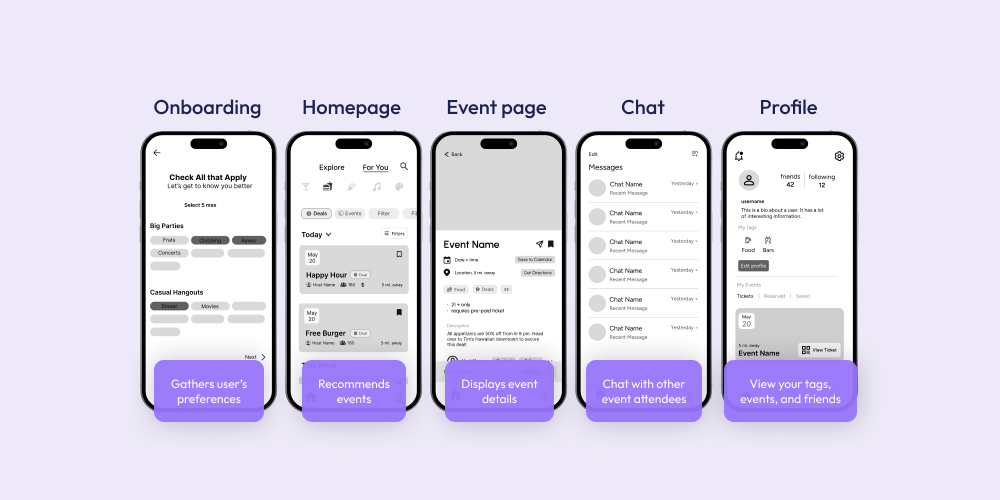

Davis After Dark

Role
UI/UX Designer
Team
1 PM, 4 Designers
Timeline
April - June 2024
Award
Audience Choice
Overview
Davis After Dark was created as a project within Design Interactive’s Spring 2024 Cohort. Design Interactive is a student-run UX organization at UC Davis that is working to give more opportunities in human-centered design to students. Each cohort team was given a prompt and a 6-week time period to finish their project before presenting to a panel of judges
Prompt
“Due to a lack of centralized and up-to-date information, students, residents, and visitors often remain unaware of all the social events and opportunities that Davis has to offer after dark.”
Goal
Design an app that caters to Davis residents’ varying definitions of nightlife by emphasizing personalization and convenience.
Research
Research Goals
We came up with goals to help guide our research.
- What do Davis residents' consider nightlife?
- How do people currently feel about the nightlife scene in Davis?
- How do people in Davis usually find out about upcoming events?
Research Methods
- Competitive Analysis
- User Survey
- User Interviews
- User Personas
Pictured above: Us thinking really hard about our research goals.
Competitive Analysis
Eventbrite is the most used event app, while Poppin is the most popular in Davis specifically.
Key takeaway: Users like to be given options to personalize their experience (with app features and event variety), without being overwhelmed.
User Survey
We received 61 respondents from Davis residents between the ages of 18 and 60 years of age.
Here were our most prominent findings:
Rating nightlife in Davis:
54% rated it a 3 out of 5
Finding nightlife events:
86% through friends
74% through social media
Nightlife preferences:
88% prefer dinner with friends
26% prefer clubbing
20% prefer frat parties
These results drastically shifted our goals.
We went into the project assuming most Davis residents wanted to do “typical” nightlife activities (parties, clubbing), but just didn't have a good place to discover these events. Instead of taking an advertising approach, our research showed that it would be best to cater to the diverse community and range of preferences present in Davis.
User Interviews
We conducted user interviews of a wide range of Davis "nightlife goers" to better understanding of our users' needs.
Key takeaway: Emphasized the demand for a nightlife app that addresses the various needs in Davis specifically.
User Personas
Based on our overall research results, we created two user personas to understand the goals of our potential users.
Micheal represents our more outgoing users that prefer frat parties and DJ events.
Nara is a little more introverted and loves smaller outings, but also wants to meet more people at bigger parties.
Research Insights
- App users want to personalize their experience
- There is a wide range of nightlife event preferences
- Users want to connect with other people and communities in Davis
Define
How might we simplify the process of discovering nightlife events, while also prioritizing the diverse community present in Davis?
Ideation
We began making solution sketches to address the pain points we discovered while doing research.
Mid-fi
We took our sketches and began solidfying our main screens and their features.
Mid-fi Usability Testing
Good
- Filters and tags are great for personalization
- User flows are intuitve and easy to navigate
Constructive
- Add a “See all” option for events on homepage
- Switch “heart” icon to “bookmark” to save events, more intuitive
- Having a profile bio is unnecessary
Hi-fi & Final Prototypes
Design System
Going into hi-fi, we considered ways we could incorporate more "Davis-like" themes into our app in order to stand out amongst other apps.
We decided to add characters that are assigned to users based on results from the onboarding quiz! We wanted them to encapsulate Davis culture, and also reflect the two main audiences we found in our research.
The first is DJ Moo-dy, who is outgoing and likes to party, and represents Davis' unofficial cow mascot.
Cool Cat Cheeto is more laid back and enjoys a chill night with friends. Cheeto is an actual cat that is famous on the UC Davis campus!
As for the overall design system, we went with a darker theme with purple as the main accent to give off a nighttime feel.
Final Prototypes
Onboarding/Personality Quiz
- Sign-up and sign-in options
- Select preferred tags
- Follow businesses and organizations to see their particular events
- Assigned character based on personality test results
Choosing Filters
"For You" page with personalized events
"Explore" page for a more general list of events
Filter by category and tags
Drop down and calendar view to filter by date
General filter button to sort by distance, price, following, and popularity
Looking at an Event Page
- Show event details (date, time, description, host name)
- Bookmarked and share with others
- RSVP for free events, or purchase tickets
Profile
- Add and view friends
- Add more tags and change visibility of profile
- Retake test to get updated character
- View favorited and RSVP-ed events
Chat & Adding Friends
- Chat with friends
- Group chats for organizations and events
- Add friends based on mutuals
Reflection
Challenges
- Creating a unique and effective design system
- Defining what "nightlife" is to Davis residents
- Navigating Figma tools and creating prototypes
- Being intentional with our design choices
Next Steps
- Expand on our nightlife characters
- Introduce more social features, like compatibility calculations
- Create flows for creating an event
- Conduct another round of usability testing